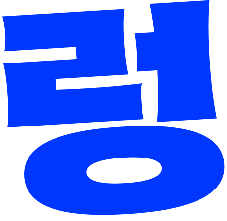
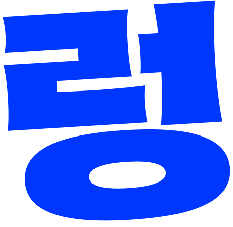
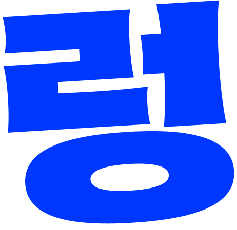
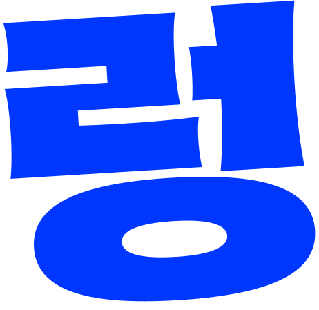

 



전시는 얼렁뚱땅이라는 단어에서 출발한다.
얼렁뚱땅은 일반적으로 즉흥적이거나 성의 없어 보이는 태도를 의미하지만,
학생이자 아마추어인 우리가 겪을 수밖에 없는
‘얼렁뚱땅’스러운 불완전성 속엔 되려 우리의 개성을 마주할 기회가 담겨있기도 하다.
이번 전시는 그러한 ‘얼렁뚱땅함’을 작업의 일부로 받아들이며,
과정 속의 불확실성과 유동성을 드러내고자 한다.
참여한 두 팀 모두 과정에서의 움직임에 주목하며,
서툴고 불안정한 상태에서 출발해 각자의 방식으로 주제를 확장한다.

1팀은 ‘코리올리 힘’ 개념을 출발점 삼아 가족 관계의 복잡성과 그 안에서
발생하는 감정의 흐름을 다루며, 2팀은 정치 성향이 다른 커플의 일상을 다룬
페이크 다큐 작업을 통해 사회적 관점과 개인적 친밀감 사이의 간극을 탐색한다.
작업 방식과 내용은 다르지만, 두 팀 모두 확정되지 않은 상태에서 시도하고 구성하며
결정해 나가는 일련의 태도를 공유하고 있다. 이는 ‘얼렁뚱땅’이라는 단어가 내포하는
미완의 성격, 즉흥성과 조심스러운 실험을 반영한 결과다.
본 전시는 명확한 주제나 화려한 결론을 제시하지 않는다.
대신 작업자들의 일관되지 않은 시선과 감정, 시도를 있는
그대로 제시하며 관람자로 하여금 불완전한 질문들과 가공되지
않은 태도 자체를 마주하게 만든다.


우리는 자신을 완전한 개별자라고 생각하고 내가 느끼는 감정, 내가 건네는 말,
내가 지닌 나라는 존재는 곧고 정확하게 닿을 수 있으리라 믿는다. 그러나 세계는
회전한다. 우리가 서 있는 곳은 거대한 회전 원판. 그래서 우리는 같은 공간에
존재하면서도 말은 비껴가고, 표정은 오해되고, 사랑은 엇나간다. 나의 감정과
의도는 기대와는 다른 곡선을 그리며, 나의 말은 너에게 닿기 전에 휘어진다.


이 작업은 평범한 새벽의 대화를 통해, 사랑하는 사이일지라도 서로 다른 세계관 속에서
살아가는 두 사람이 마주하는 미묘한 이해와 오해, 애정과 거리감을 담아낸다.
이를 통해 사랑이 가치관의 차이를 넘어설 수 있는지,
우리는 정말 같은 세상을 바라보며 사랑하고 있는지를 조용히 질문한다.
우리가 사랑하는 사람은 정말 나와 같은 세상을 살고 있는가?
세탁이 끝나기를 기다리는 평범한 새벽, 젊은 연인이 빨래처럼 일상 속에 스며든
대화를 주고받는다.
사랑은 특별할 것 없는 순간들 속에서 자라나기도 하고, 또 스르르 어긋나기도 한다.
좋아해서 시작된 관계지만, 나와 네가 사람을 바라보는 방식이 다르다면
우리네 연애는 지속될 수 있을까?